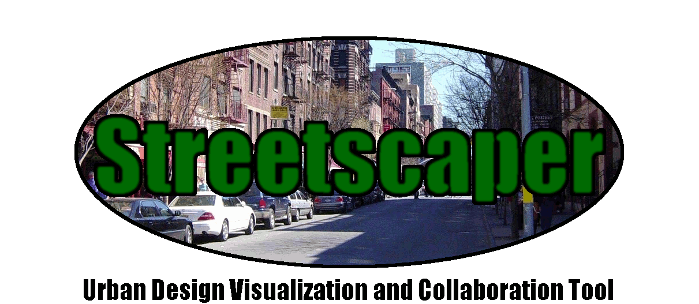

Project Location
On Street:
From Street:
To Street:
Borough:
Street Width (building-to-building)
Welcome to Streetscaper! Set a project area to get started.
Bicycles
Transit
Parking
Turn Lanes
Sidewalks
Bike Lane
Left Side
Right Side
Buffer Width (feet)
Bus Lane
Left-Hand Curb
Right-Hand Curb
Left Turn Lane
Right Turn Lane
Left Width (feet)
Right Width (feet)